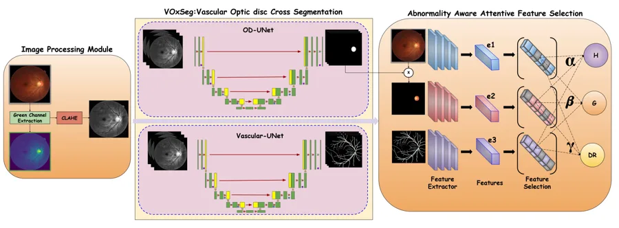
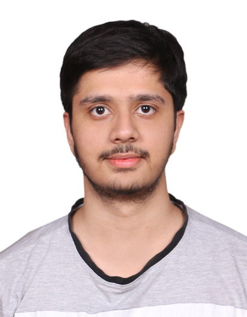
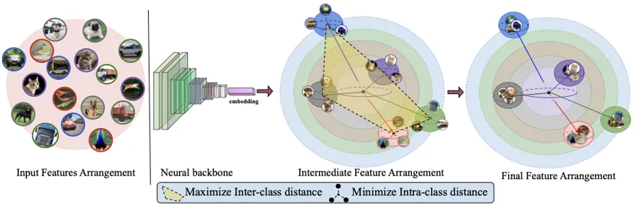
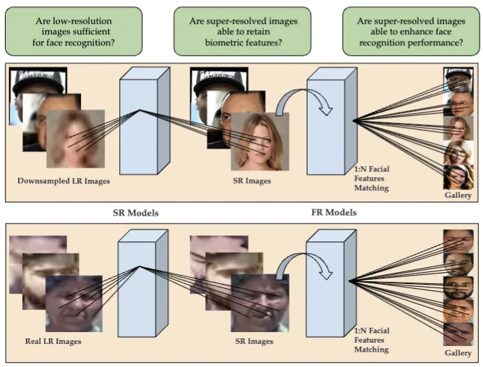
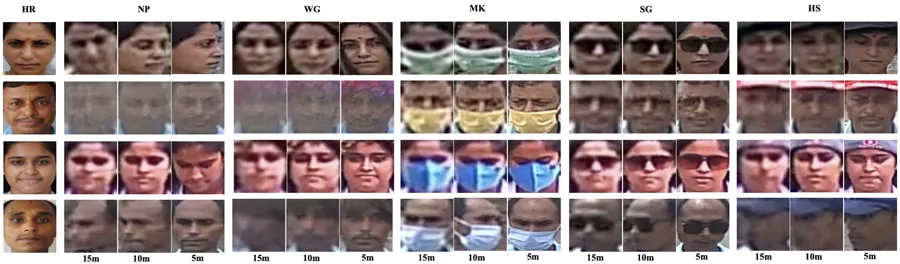
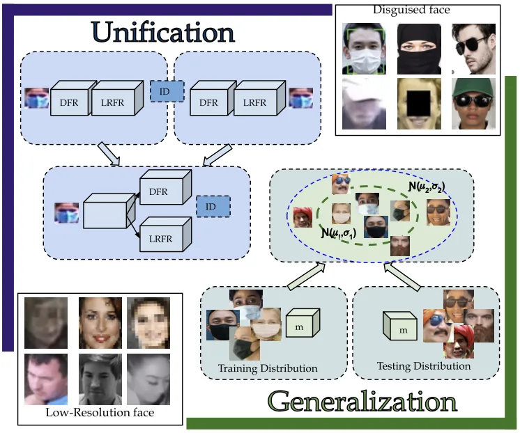
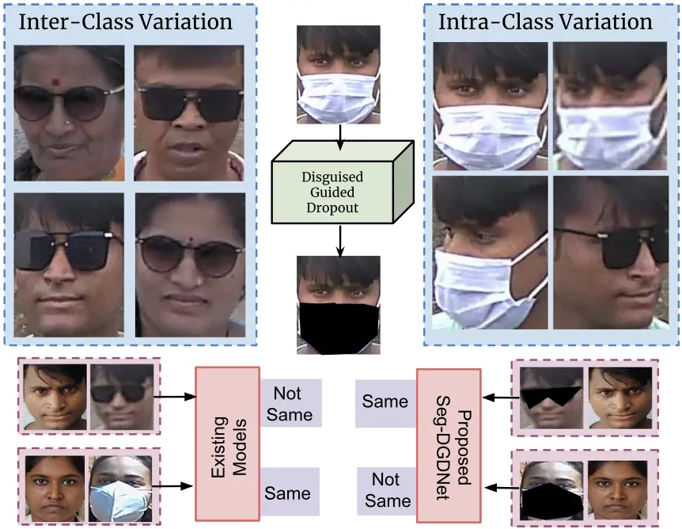

Classifying Retinal Images via Vascular-Optic Disc Cross-segmentation and Attentive Feature Selection
Sci. Reports 2025 Nature Scientific Reports
Ph.D. scholar & Prime Minister’s Research Fellow
Indian Institute of Technology Jodhpur
I am a Ph.D. student at the Image Analysis and Biometrics (IAB) Lab, Department of Computer Science and Engineering, IIT Jodhpur, advised by Prof. Mayank Vatsa and Prof. Richa Singh.
I work on computer vision and deep learning, with a focus on face recognition for surveillance and social good: recognising faces at long range, at low resolution and under disguise, and learning representations on the hypersphere that keep identities well separated.

My name is set in bold; * marks equal contribution.

Sci. Reports 2025 Nature Scientific Reports


IJCB 2024 IEEE International Joint Conference on Biometrics


IJCB 2023 IEEE International Joint Conference on Biometrics

JSTSP 2023 IEEE Journal of Selected Topics in Signal Processing